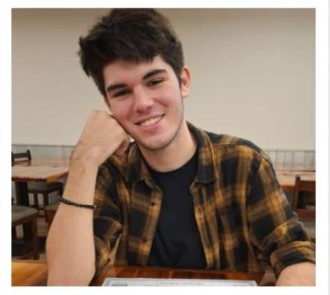

Tengo 16 años al momento de escribir esto y curso
mi undécimo grado en el Instituto Fermín Naudeau
Nací el 6 de febrero de 2008 en Panamá mi madre
es Dayra Barkley y mi papa era Olmedo Méndez de
la Guardia, ni recuerdo casi nada de mis primeros
años un par de cumpleaños y otros detalles
insignificantes: recuerdo que vivía en calle 50 en un
apartamento con mi mama y papa, recuerdo ir
bastante a un parque llamado el parque del Carmen
y que tuve un par de cumpleaños en él, pero aparte
de eso no recuerdo mucho de esa casa.
De lo que más me acuerdo fue al tiempo que nos mudamos a una casa en el
cangrejo, estábamos alquilando un apartamento cerca del parque Andrés Bello de
ahí para ese momento entre en la escuela La Salle, a la cual mi papa había asistido
en su niñez y adolescencia, en ese tiempo mis padres me animaban para aprender
diferentes habilidades como la guitarra, pero no tome interés en ella hasta años
después.
Desde ese tiempo fui fan de historias fantásticas y de fantasía cosas que nunca
pasarían en la vida real; dragones, magia, mundos sin tecnología que no la
necesitaban, esas fantasías me alegraban y me acompañaban, aun lo hacen. Me
volvieron un soñador y me inspiraron a querer crear cosas que pudieran ser una
fracción de lo fantásticas de esas historias.
Estuve en La Salle hasta séptimo grado el cual di clases durante la pandemia del
2020 y luego me cambié al Naudeau el cual di mi primer año de clases en pandemia,
durante esta retome la guitarra torpemente y actualmente estoy tomando clases
más profesionales, he estado los últimos tres años estudiando en el Naudeau, yo
nunca había sido un buen estudiante, en noveno del Naudeau tampoco lo era, pero
quería mejorar así que he estado tratando de hacerlo y estoy orgulloso de decir que
me ha ido mucho mejor.
Algunas cosas han cambiado mi papa tristemente falleció el año pasado debido a
complicaciones con la respiración, este último año he estado aprendiendo
habilidades que muchas personas consideran raras, aprendí y practico arquería,
junto con otras cosas, he estado leyendo libros desde hace cuatro años y quiero
aprender muchas cosas más.
Aún hay mucho que quiero mejorar y mucho que me queda por hacer, pero aún
tengo mucho tiempo, si dios quiere, eso es todo por ahora muchas gracias por leer.